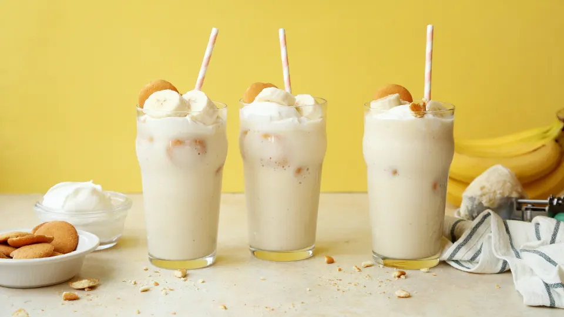

<!DOCTYPE html>
<html lang="en">
<head>
    <meta charset="UTF-8">
    <title>Banana Pudding Milkshake</title>
    <style rel="stylesheet" href="./style-pages.css"
</head>

<body>
    <h1>Banana Pudding Milkshake</h1>
    <h2>An Easy Recipe to Make Your New Guilty Pleasure!</h2></p>

    <p>An over-the-top milkshake made to taste just like 
        classic banana pudding. It's your favorite summer 
        dessert meets your new guilty pleasure.</p>
    
    <h2>Ingredients:</h2>
    <ul>
        <li>1 3 1/2 ounce box instant vanilla pudding</li>
        <li>3 1/2 cups of whole milk</li>
        <li>10 scoops of vanilla ice cream</li>
        <li>3 large ripe bananas</li>
        <li>1 cup crumbled vanilla wafer,plus 1 cup whole 
            vanilla wafers for garnish</li>
        <li>1 teaspon vanilla extract</li>
        <li>1 cup of fresh whipped cream</li>
        <li>1 large banana, sliced</li>
        <li>1/4 cup rainbow candy sprinkles</li>
    </ul>
    
    <h2>Directions:</h2>
    <ol>
        <li>In a blender, combine the pudding mix, milk, 
            ice cream, 3 bananas, 1 cup crumbled wafers, 
            and vanilla extract.</li>
        <li>Blend on high until smooth and completely 
            combined.</li>
        <li>Fill four tall chilled glasses halfway with the 
            milkshake mixture, then place a few whole wafer 
            cookies in each. Finish filling the glasses with 
            the rest of the milkshake.</li>
        <li>Top each with a dollop of fresh whipped cream and 
            garnish with wafers, a few banana slices and 
            sprinkles.</li>
    </ol>
    
</body>
</html>